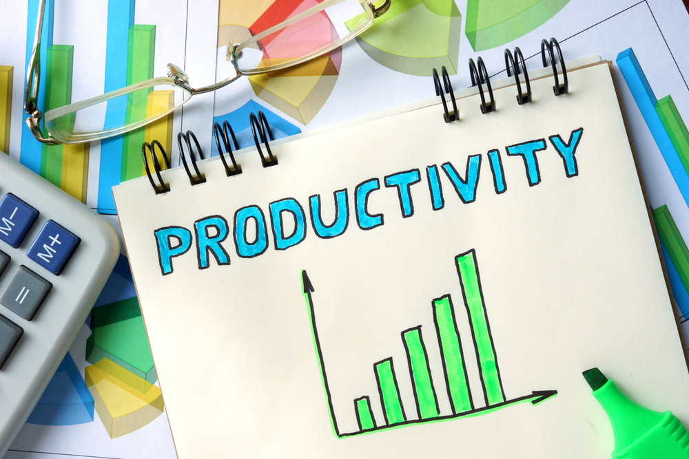

What is Productivity?
Productivity is the ratio of outputs, such labor and resources, to inputs, like products and services. Metrics like units produced and employee labor hours are used at the enterprise level to assess its importance for economic growth and competitiveness.
How can individuals boost their daily productivity effectively?
Making an orderly routine is a good place to start for people looking to increase their daily productivity. This entails establishing distinct priorities and drafting a daily timetable that allots particular time slots to various tasks. In order to avoid feeling overwhelmed by a lengthy to-do list, people can better focus on what really matters by prioritizing chores based on priority and deadlines.
Also, dividing more difficult activities into smaller, more doable steps might help them seem less overwhelming and allow for consistent progress. Addition, productivity can be greatly increased by implementing efficient time management strategies.. Keeping track can also be facilitated by using productivity tools and software, such as task organizers and calendar apps.
Finally, Regular exercise, getting enough sleep, and taking deliberate pauses all improve general well being by lowering stress and exhaustion ,and use regular meditation or mindfulness . Taking short walks or mental breaks during the workplace can help reduce burnout and enhance general attention when returning to responsibilities. Maintaining a healthy balance between work and personal obligations keeps people motivated and prepared to take on new tasks, which eventually increases daily output in a long-term way.